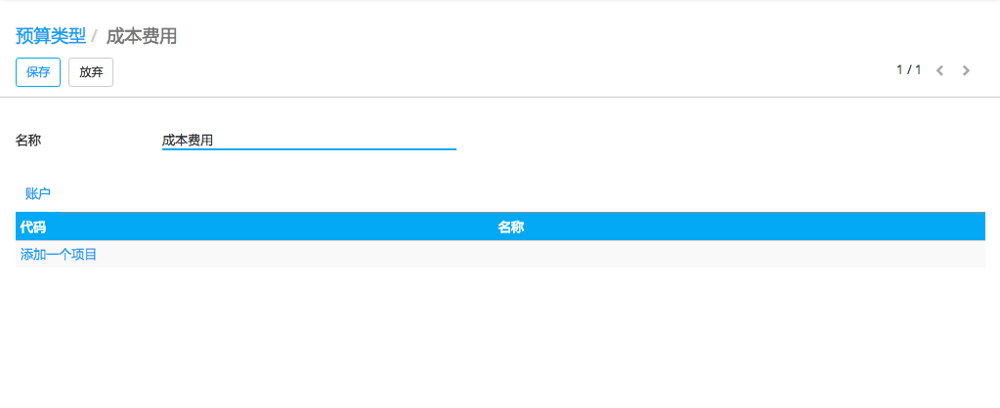
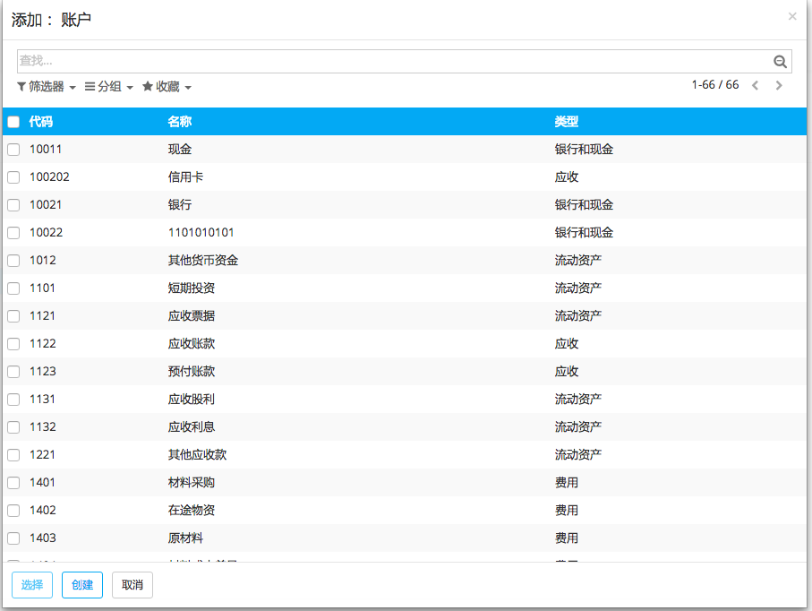
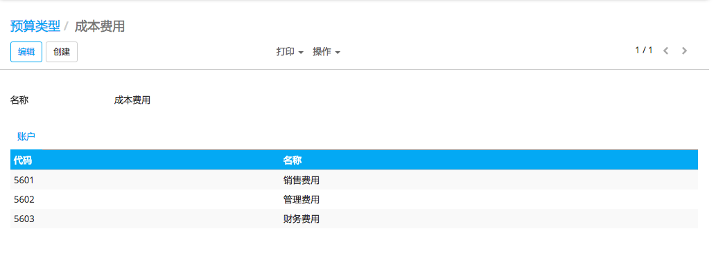
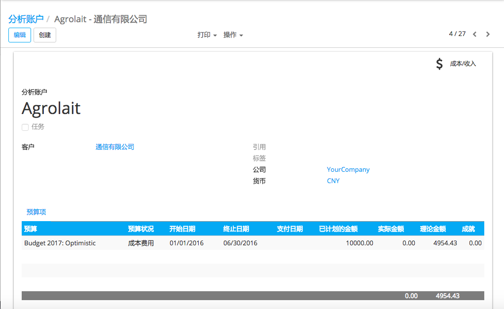
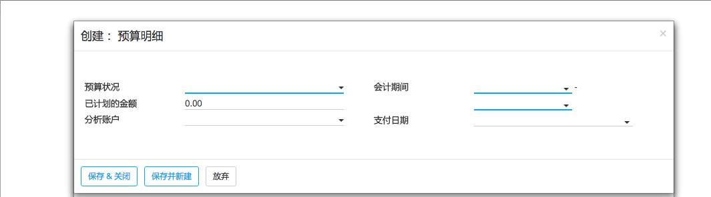

概述
预算管理是企业运营的重要组成部分。你可以对比计划检测实际财务业绩。YuanCloud使用通用和分析科目管理其预算。
我们将使用下面的例子来说明。我们与Smith&Co刚刚开始一个项目,我们希望做这个项目的收入和费用的预算。我们计划收入1000,费用不超700。
配置
首先我们需要安装预算相应的应用程序。会计的主要模块应用。在应用程序模块, 安装* 会计和金融 [UNKNOWN NODE problematic]应用。

也进一步配置是必要的。去:menuselection:[UNKNOWN NODE title_reference] ,使用* 预算管理 [UNKNOWN NODE problematic]功能
如果我们想要精确和指定供应商发票, 您应该启用分析会计。如果不用分析账户, 我们只能一般账户统计总额。
预算状况
预算的位置一般是科目, 用于保存预算(通常是费用或收入科目)。事先需要定义, YuanCloud才知道怎样去抓取预算信息。有一些可能已在科目表中安装.
定义位置, 进入 .
在我们的示例中,我们需要定义关联到项目费用的科目。创建一个位置并将条目添加到选择账户。
在这种情况下,我们选择使用的三个相关科目,用来登记费用。
点击*选择*。
确认你的预算设置。
重复这个步骤创建一个收入预算的位置。只有在这种情况下选择相关收入科目。
分析会计
如果你想具体分析发票或供应商账单, 你需要利用分析科目。YuanCloud需要知道指定预算的成本或费用。所以, 我们需要将发票和费用链接到分析科目。创建分析科目, 需进入会计模块和点击:menuselection:[UNKNOWN NODE title_reference]. 创建一个名为Smith&Co项目并选择相关的合作伙伴。

设置预算
现在,让我们为我们的预算设定我们的目标。我们规定,我们期望这个项目获得1000, 话费不超过700。
设定这些目标,进入会计程序,选择 ,创建一个新的预算。
我们需要为这个预算命名。在这种情况下,我们把它叫做“史密斯项目”。选择预算适用的期间。下一步, 在预算行定义目标。
选择相关预算行的预算位置。换句话说,选择你想要的位置科目。在这种情况下,我们将开始费用目标, 不超700。选择“成本”预算位置, 指定计划预算金额。我们记录成本,我们需要指定一个* * 负数金额 * [UNKNOWN NODE problematic]。最后,选择相应的分析科目。
点击* Save & new [UNKNOWN NODE problematic]输入收入预算。预算的位置是收入, 计划是1000。保存并关闭
你需要确认并且同意这个预算
检查预算
你可以在任何时间检查你的预算。查看进化,让我们录入一些发票和供应商账单。
小技巧
如果你使用分析账户, 请记住,您需要在发票上和/或购买行指定科目。
返回预算明细并且找到具体项目
通过分析账户,YuanCloud可以计算发票行和采购发票行, 金额将显示在* 实际金额 [UNKNOWN NODE problematic]列。

注解
理论数据代表理论上可用/可收到的金额。当你12个月的预算是1200 (1月至12月),今天是1月31日,理论数量将达到1000,因为这是实际的数量。